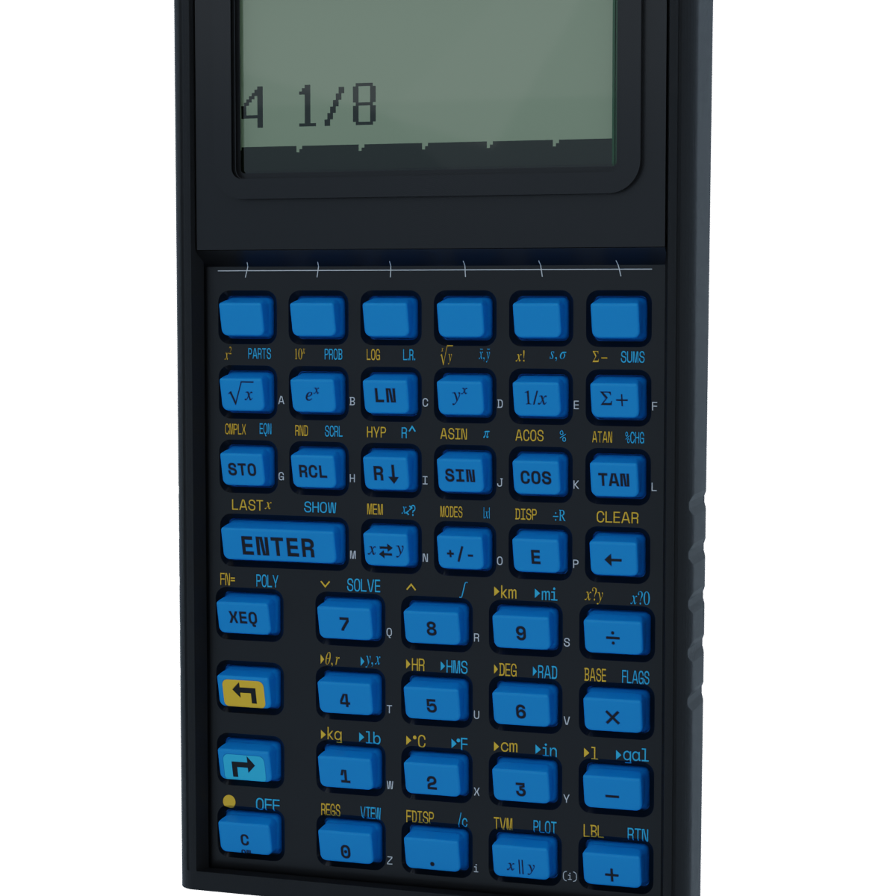
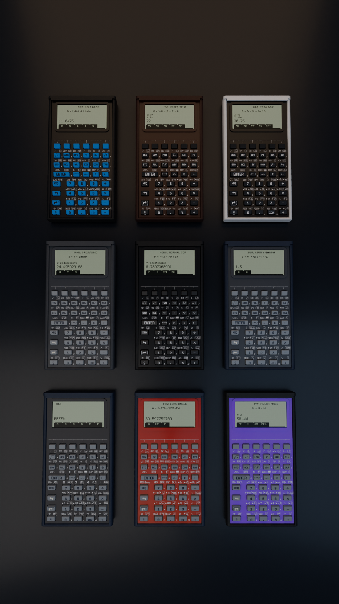
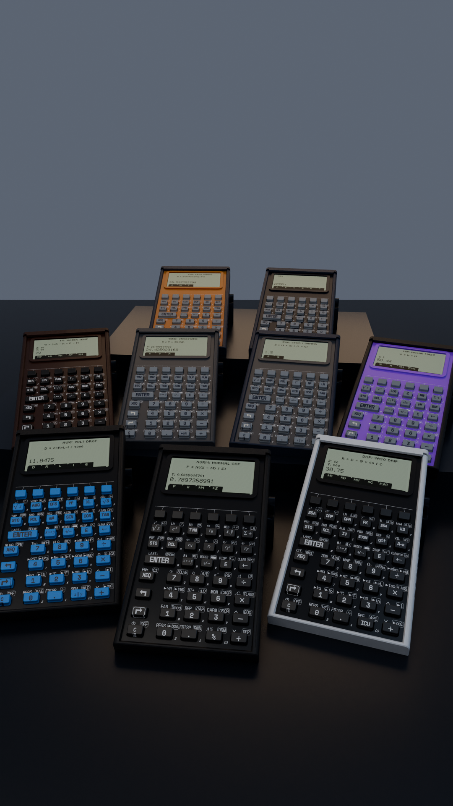
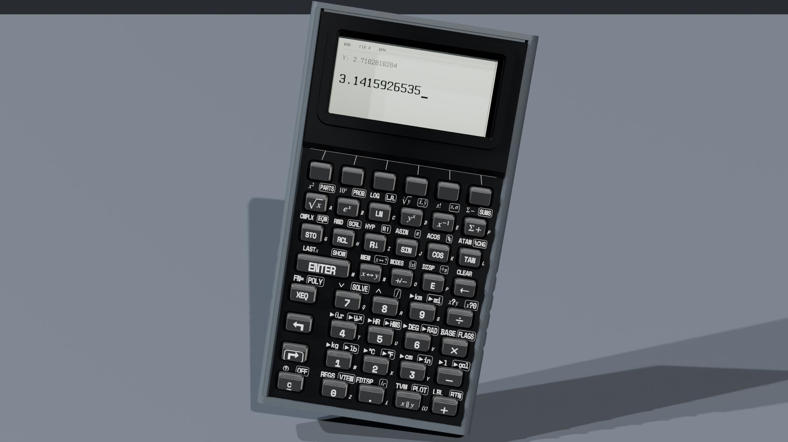
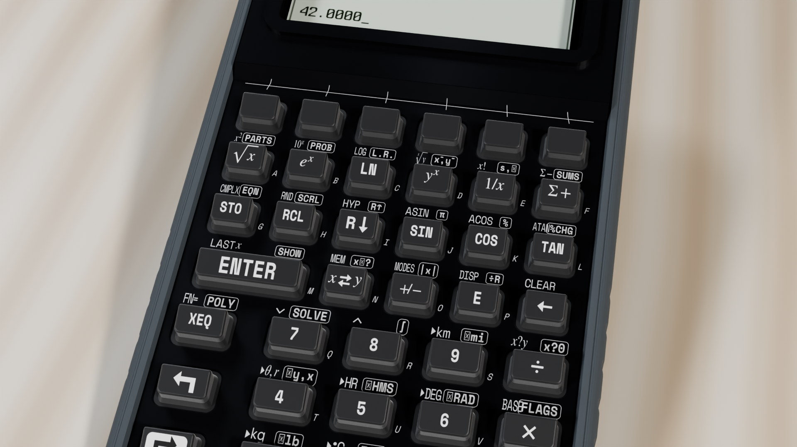
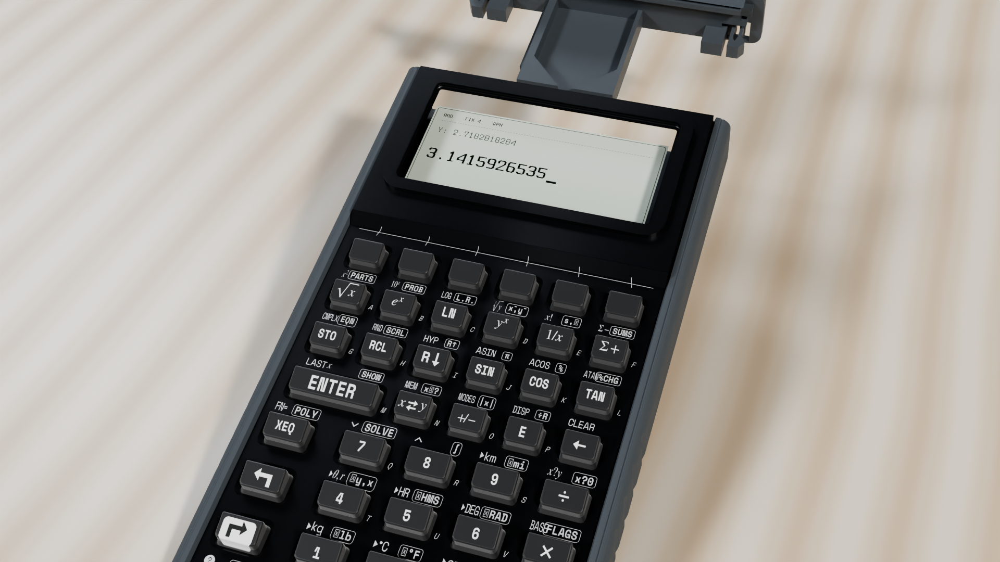
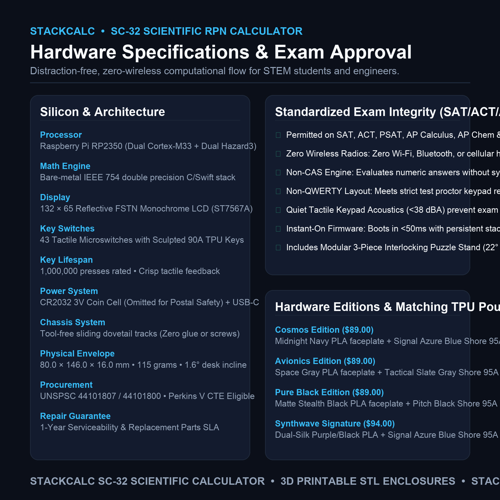
SC-32 & Specialist RPN Series
One deterministic RPN stack engine across 9 specialist domain instruments plus the core SC-32 Scientific and SC-6 Elementary calculators. Physical hardware kits feature Raspberry Pi RP2350 silicon, 43 snap-dome microswitches (400g), a reflective 132×65 ST7567A monochrome LCD, and tool-free sliding dovetail faceplates. While Batch 04 hardware is in production, test every model today in the native iOS, watchOS, and macOS app via the [FLAGS] menu.
[g] [FLAGS].
Engineered for Mathematical Focus
Over the last twenty years, calculation was swallowed by the screen: phone notifications, fragile touch displays, and hidden syntax errors. StackCalc SC-32 returns calculation to a dedicated, tactile instrument.
Elimination of Parentheses Traps
Standard in-fix calculators force students to parse complicated operator precedence and balance parentheses sets before calculating. In RPN, operators evaluate the instant they are keyed, showing calculations from the inside-out.
Full Intermediate State Visibility
The 4-level operational stack (X, Y, Z, and T) displays every intermediate value on the transflective ST7567A monochrome screen. Students spot conceptual calculation errors immediately, rather than discovering a faulty answer at the end.
Authoritative 400g Keystrokes
Glass touchscreens provide zero mechanical feedback, leading to missed keystrokes during time-crunched exams. The SC-32 provides 400 grams of snap-dome force with debossed finger-centering dishes on every keycap.
The Video Showcase: Mechanical Animation, Unboxing & Engineering Lesson
Experience the complete engineering journey from sliding dovetail CAD kinematics and laser-engraved card unboxing to 4-register RPN stack operations on a work desk.
Mechanical & CAD Animation
Exploded 3D view showing sliding dovetail chassis, Shore 95A tactile keypad membrane, and captive top cap retention.
4-Line Stack Dynamics & Zero Parentheses
Inside-out evaluation of (12 + 8) × (15 - 5) on the 4-line live XYZT stack. Zero parentheses keys needed, and intermediate values remain visible.
Radical Pyramids & Continued Fractions
Step-by-step nested radical evaluation saving 350+ keystrokes per exam and shaving 4 minutes off tournament sprint tests.
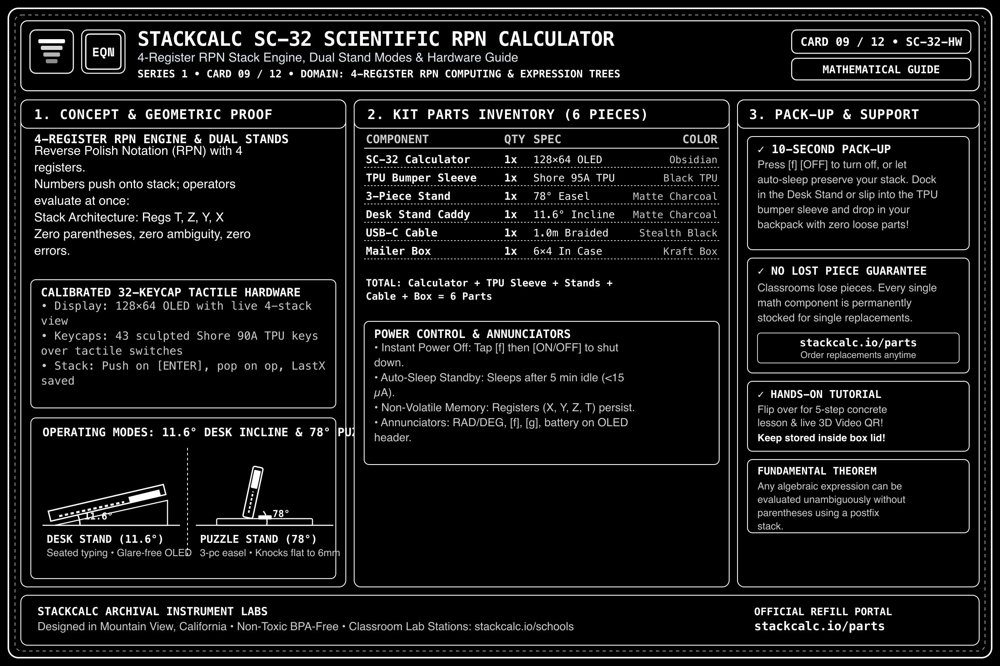
Laser-Engraved Archival Reference Card (135×90mm)
Included inside every SC-32 box. Scan Side B to access the full assembly and firmware video suite or inspect Side A for circuit and chassis replacement IDs.
Order of Operations Made Visible
Traditional calculators act as opaque black boxes that hide evaluation order behind nested parentheses. The SC-32 makes mathematical dataflow tangible: numbers enter a four-register operational stack, operators act on physical pairs, and intermediate results stay visible at every single keystroke.
Push & Consume
Values are pushed onto registers \(X, Y, Z, T\). Pressing ENTER lifts the stack; pressing an operator consumes the bottom two operands and drops the stack in real time.
Inside-Out Evaluation
Complex rational expressions like \(\frac{(14 + 6) \times (38 - 13)}{25}\) resolve naturally from inside out in 11 tactile strokes. No parenthesis count tracking, no operator precedence traps, no syntax errors.
Sub-Millisecond Response
RP2350 silicon executes mathematical primitives in microseconds with instant LCD updates and 400g snap-dome acoustic feedback. Calculations become tactile muscle memory.
Equip Your Classroom With Tactile STEM Manipulatives
The SC-32 was designed from the ground up to pair with our physical manipulative collection, taking students seamlessly from spatial touch to rapid scientific computation.
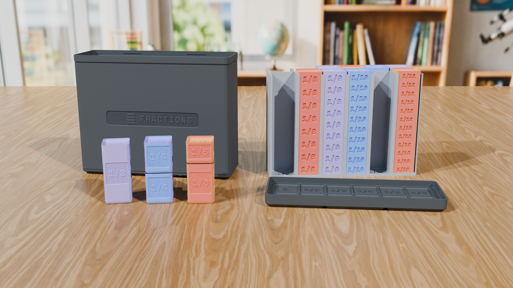
Fraction Studio
Tactile proportional fraction towers (84mm Whole) with snap-fit segments. Bridges arithmetic fractions directly into stack computation.
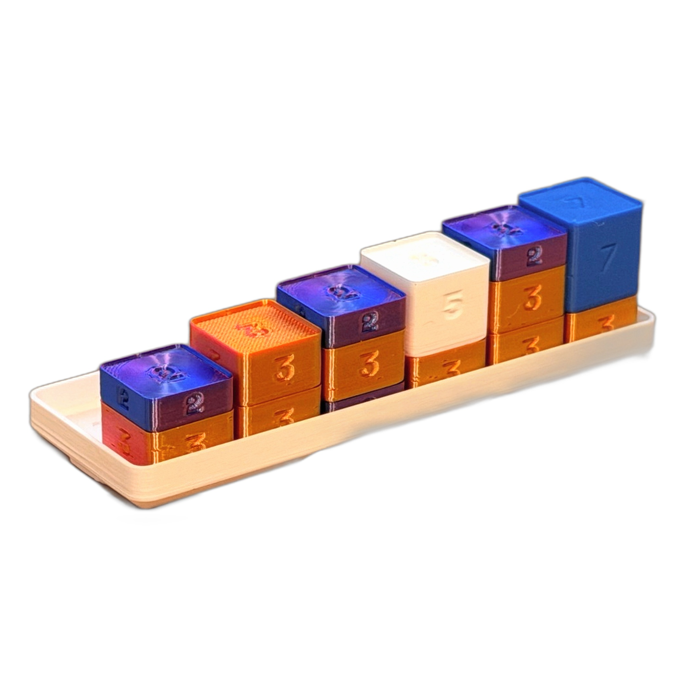
Prime Factor Studio
Tactile prime number towers with snap-fit blocks. Visualizes prime factorization, LCM, GCD, and the fundamental theorem of arithmetic.
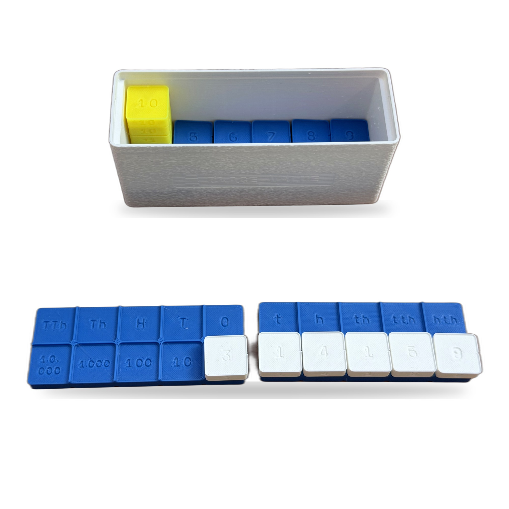
Place Value Studio
Base-10 counting trays, snap-fit tens rods, and hundreds flats. Builds concrete decimal regrouping before entering the RPN stack.
Tool-Free Sliding Dovetail Architecture
Zero screws, zero adhesives, zero fragile snap clips. Every component slides into place with mechanical precision.
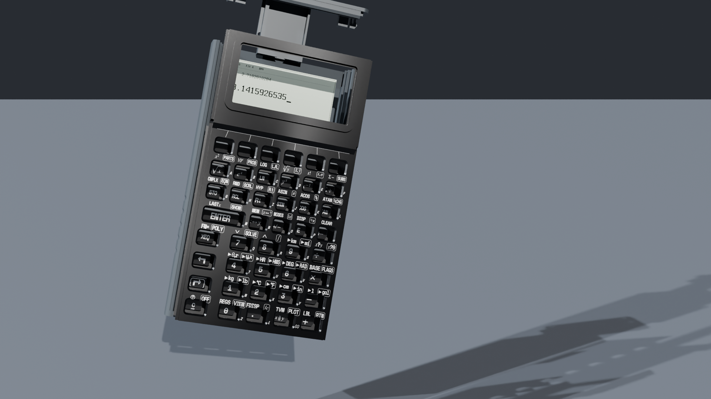
Precision 4-Part Interlocking Stack
The SC-32 disassembles in seconds along continuous internal dovetail tracks for tool-free battery replacement and modular faceplate customization:
- 1. Base Enclosure: Ergonomic 1.6° planar wedge with anti-wobble desk pads.
- 2. Motherboard Core: Raspberry Pi RP2350 with surface-mount ST7567A reflective graphic LCD.
- 3. Tactile Membrane: Shore 95A flexible TPU sheet with 43 gold-plated snap-domes.
- 4. Faceplate & Snap Cap: Satin matte faceplate with LCD shroud and retaining top cap.
FORCE (g)
400g ──┐ <-- Tactile Snap Peak (Intentional Actuation)
│ \
│ \
120g ──┼───┴────────┐ <-- Bottom-Out Snap (720 Hz Click)
│ \
0g ──┴──────────────┴───────────► TRAVEL (mm)
0.0mm 0.15mm 0.25mm
Engineering Rationale: Standard rubber membrane calculators mush at 60g, creating ambiguity and double-entry errors. The SC-32's 400-gram metal dome requires decisive finger commitment, enabling blind, error-free entry at 140 keystrokes/minute.
NEC Wire Gauge, Conduit & Power
Dedicated AWG voltage drop solver, 3-point conduit offset/saddle bends (OFS), power factor & reactive impedance (PF, XL, XC), and fractional inch f-i stack entry.
Vasoactive Drip, Dosing & Renal
Weight-based vasoactive infusion rate solver (DRP), Body Surface Area (BSA), Cockcroft-Gault / CKD-EPI filtration (GFR), pharmacokinetic half-life (PK), and A-a gradient.
Baker's Percentage & Desired Dough Temp
4-factor Desired Dough Temperature water solver (Tw), Baker's Percentage scaling (BK%), levain inoculation (LEV), pan volume ratios (PAN), and Plato/Brix fermentation (ABV).
Crosswind, COGO Traverse & Density Altitude
Runway crosswind/headwind vector decomposition (WIND), forward/inverse COGO survey traverse (TRV, INV), horizontal curve geometry (CRV), and Time-Speed-Distance (TSD).
TVM, Black-Scholes & Normal CDF
5-register Time Value of Money solver (TVM: rN, rI, rP, rM, rF), Gaussian cumulative normal probability (NORM), Black-Scholes option pricing (BS), and bond duration.
VSWR, Friis Link Budget & Cascaded Noise
Standing wave ratio & reflection coefficient (SWR, Γ), Free-Space Path Loss (FSL), cascaded Noise Figure (NF), L-network impedance matching, and dBm ↔ mW conversions.
64-Bit Integer, Bitwise & IEEE-754 Float
Instant radix switching (HEX, DEC, OCT, BIN), configurable word widths (8/16/32/64-bit, 2's complement / unsigned), barrel shifts (ASR, ROR), and CRC checksums.
Lens Field of View, Hyperfocal & Exposure
Sensor/lens Field of View solver (FOV), Exposure Value & ND filter compensation (EV, LUX), Depth of Field & hyperfocal distance (DOF, HFD), and SMPTE timecode arithmetic.
Molar Mass, Dilutions & Buffer pH
Stoichiometric Molar Mass solver (MW), stock dilution aliquots (C1V1), Beer-Lambert spectrophotometry (εbc), Henderson-Hasselbalch buffer capacity (pH, BUF), and ideal gas laws.
Technical Specifications
Engineered for durability, speed, and standard test compliance.
| Microcontroller | Raspberry Pi RP2350 (Dual ARM Cortex-M33 @ 150MHz + Dual Hazard3 RISC-V) |
| Operational Engine | Native bare-metal C / Swift RPN core with IEEE 754 double precision |
| Graphic Display | 132×65 Reflective FSTN Monochrome LCD (ST7567A controller, native Terminus typography) |
| Keypad Switches | 43 stainless steel tactile snap-domes (400g actuation force, 1,000,000 cycle lifespan) |
| Keycaps & Membrane | Custom debossed finger-centering dish caps molded with Shore 95A flexible polymer |
| Power Source | 1× CR2032 3V coin cell (3–6 months typical daily use) |
| Physical Dimensions | 80.0 mm (W) × 146.0 mm (L) × 16.0 mm (H) • 1.6° ergonomic incline |
| Net Weight | 115 grams (including coin cell and faceplate) |
| Testing Compliance | ✓ Permitted on SAT, ACT, PSAT, AP Calculus, and AP Physics (Zero wireless radios, Non-CAS) |
| Industrial Design & CMF | Sliding dovetail tool-free chassis • Zero fasteners or adhesives • Satin matte impact-resistant PETG • Custom Shore 95A keycaps • Ergonomic 1.6° planar wedge with anti-wobble desk pads |
What's in the Box
Everything you need to begin immediate calculations.
SC-32 Handheld Instrument
Dual-core RP2350 silicon, 43 snap-dome tactile keys, and ST7567A reflective LCD. 100% pre-soldered and bench-tested.
Shore 95A TPU Travel Pouch
Flexible protective travel sleeve included by default with every unit to protect screen and keys in backpacks.
Interlocking Puzzle Desk Stand
Modular 3-piece interlocking desk stand supporting dual viewing angles (22° active typing tilt / 58° display mode).
Reference & Archival Cards
Heavyweight matte laminated quick-start cheatsheet and exploded CAD schematic card with Git-tracked Part IDs.
Safety, Compliance & Guarantees
Certified for testing integrity, electrical safety, and classroom durability.
WARNING: INGESTION HAZARD. This product contains a button cell or coin cell battery (CR2032). Death or serious injury can occur if ingested. Keep new and used batteries out of reach of children. Seek immediate medical attention if suspected swallowed or placed inside any part of the body.
Approved for official college entrance exams. Non-CAS calculation engine with zero wireless antennas, Bluetooth radios, or network capabilities. Retains full exam integrity in all proctored testing halls.
Engineered for sustainability, not planned obsolescence. Snaps apart cleanly via sliding dovetail rails without single-use glue. Individual keypads, LCD modules, and enclosures are available for easy field repair.
Fabricated with lead-free ENIG circuit boards and certified RoHS-compliant electronic components. Enclosure manufactured from odorless, non-toxic, recyclable matte polymers.
Bench Verification & Validation
Laboratory test parameters, switch endurance, and testing board regulatory compliance.
400g Tactile Snap-Domes
Actuation threshold verified at 400g ± 15g across 100,000 continuous test cycles. Provides sharp physical mechanical confirmation without mushy rubber squish.
Zero Wireless Radios
Zero Bluetooth, zero Wi-Fi, zero RF transmission hardware. Meets College Board SAT, AP Calculus, AP Physics, and ACT testing center calculator security standards.
Interlocking Dovetail Rails
4-part sliding dovetail enclosure allows tool-free battery replacement and faceplate customisation in 10 seconds with zero single-use plastic clips or glued seams.
Frequently Asked Questions
Examination compliance, hardware architecture, and firmware details.
Can I bring the SC-32 into College Board (SAT/AP) or ACT exam rooms? +
Yes. Testing authorities prohibit calculators with wireless communication (Wi-Fi/Bluetooth), cameras, sound recorders, audio jacks, or computer-style QWERTY keyboards. The SC-32 possesses none of these features, making it fully compliant for standardized testing environments.
Why does the SC-32 use Reverse Polish Notation (RPN)? +
RPN is a postfix mathematical notation favored by scientists and engineers because operators evaluate operands immediately without ambiguous order-of-operation rules or nested parentheses. Keystroke count drops by approximately 20–30%, and intermediate stack values remain constantly visible on the 4-line display.
How long does the battery last? +
The transflective ST7567A monochrome LCD requires no active backlight in daylight, consuming mere microamps. Combined with deep-sleep power states on the RP2350 microcontroller, a single standard CR2032 3V coin cell powers 6 to 12 months of daily laboratory and contest operation. (Note: Due to postal consumer safety regulations, units ship with the coin cell omitted; CR2032 batteries are widely available at local stores).
Is the design open hardware? +
Yes! We provide 100% free open-source STL 3D models, KiCad PCB layout files, and open C firmware on GitHub under an open-source license. You can fabricate, modify, and repair your own calculator freely.
SC-32 Scientific Calculator Reference Manual
The definitive operational handbook: 4-level XYZT stack mechanics, numerical solvers (SOLVE, ∫, POLY, TVM), vector plotting engine, and Texas UIL contest guidelines. Available as a 100% lay-flat spiral-bound bench handbook ($16) and school district classroom pack.
Self-Manufacture & Inspect Source Code
Download print-tested STLs for the chassis, faceplate, and keys, plus the complete RP2350 C firmware and KiCad PCB schematics.
The SC-32 connects directly with our physical math manipulatives (Fraction Studio and Prime Factor Studio), alongside the elementary SC-6 Calculator, providing students with a seamless path from hands-on tactile models to high-speed scientific calculation. Access classroom lesson modules in our 120 Classroom Station Worksheets (PDF) and on-demand chassis manufacturing via Slant 3D ↗.